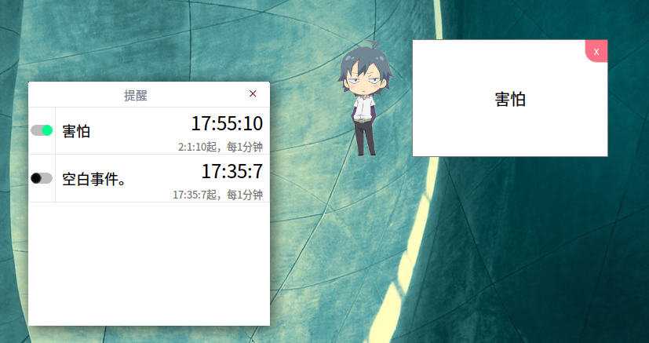
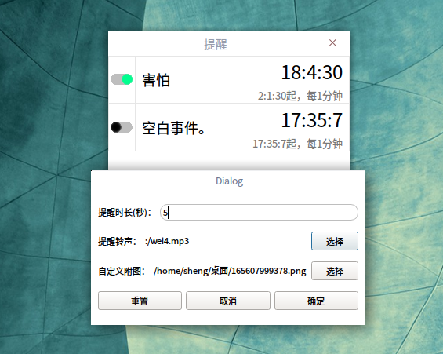
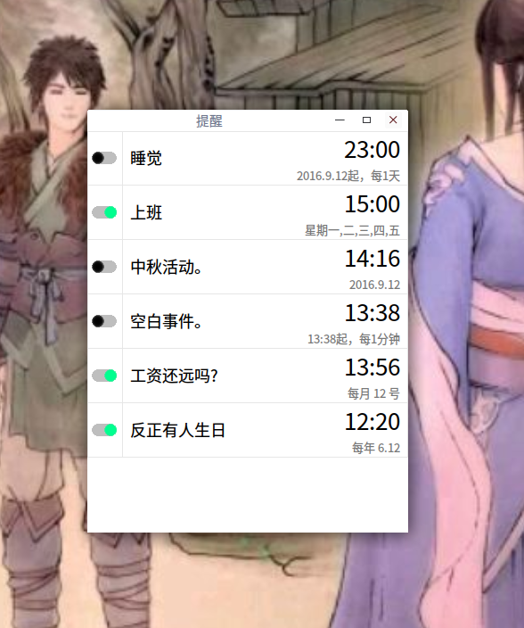
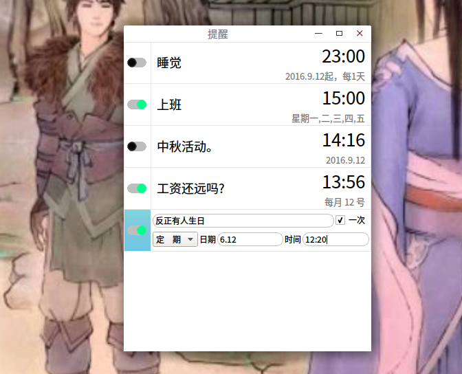
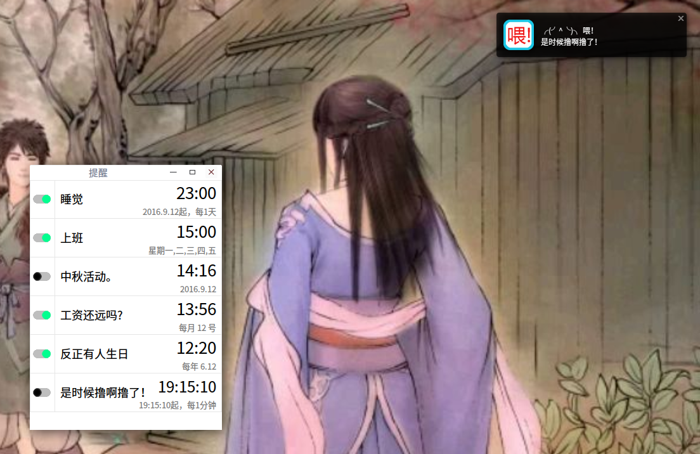
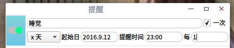
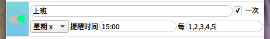
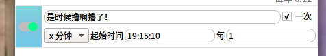

[定时提醒 桌面便签] NoteWei v0.3 17.12.17_11:12:07
项目地址：https://www.github.com/noahsai/note
[04.06] NoteWei_0.3 改了名字 多点设置 【更新帖】https://bbs.deepin.org/forum.php?mod=viewthread&tid=137098&extra=
===================================

 【v0.2】
①自带了一个提示框，在‘设置’中设置正数就使用软件自带的，如果设置负数，则使用系统自带的提示功能。
②自带提示框可拖动，并记住位置。多条时点击切换到下一条。点击右上角的x则关闭所有提醒。
③修bug，优化操作逻辑。
 



【v0.1】这是一个关于想做桌面便签，最后只搞成提醒程序的故事。 提醒类型：①每年某日；②每月某日；③特定某天； ④每几天； ⑤每几分钟；⑥星期几。 提醒方式：使用系统的通知。 无自定义功能，无其他功能。
|